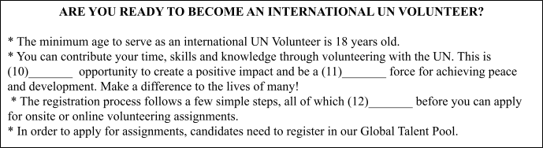
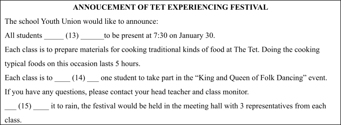

The tendency of young people to be critical of their parents and blame them for most of the misunderstandings between them is a natural and expected behavior. They have always complained, more or less justly, that their parents are traditional, possessive, and controlling; that they do not trust their children to deal with challenges; that they talk too much about particular issues; and (18) ______, at least in the context of those relationships between parents and children. It is my opinion that it is a common occurrence for parents to underestimate (19) ______ and to forget how they themselves felt (20) ______.
The decisions that young people make about their attire and hairstyles, as well as their musical and entertainment preferences, frequently anger their parents. Their motivation is not to do this. Their sense of isolation from the adult world stems from the fact that they have not yet been accepted into it. Therefore, they build their own civilization and culture from the ground up. If it turns out that their parents find their music, entertainment, vocabulary, attire, or (21) ______, this gives them even more satisfaction. They have the perception that they are superior, at least in a limited sense, and think they are also the leaders in terms of style and taste.
When you have the intention of (22) ______, cooperation might be a component of that plan. You have the ability to enchant other people, particularly parents, into doing things in the manner that you desire. You can also (23) ______ people with your sense of responsibility and initiative, which will result in their granting you the authority to do what you want to do.
With all the options for entertainment available today, is reading books (24) ______ worthwhile? (25) ______ argue that library borrowing is out of reach for many people and that even paperback books are too pricey. Another thing they may say is that watching TV is more exciting and allows people to unwind at the same time. The fact is, though, that books continue to enjoy enormous popularity. As a first step, they ask the reader to utilize their imagination. A few pages or perhaps a chapter can be read before you decide to put the book down. Then, it could be so engrossing (26) ______ you just can't put it down! A crime fiction, an autobiography, or an informative book are just a few examples of the many (27) ______ available to you. If you're still having trouble deciding, try asking around or reading reviews. In contrast to my inability to live without books, I can (28) ______ to live without television with relative ease. At bus stops, you are not allowed to watch television.
National parks are very helpful for keeping track of climate change. Large areas of untouched wilderness have been used by researchers to gather information about species and ecosystems. At first, they did observational data collection on foot. Now, to get information about polar bears, they use more advanced methods, such as monitoring from above with drones like those used in Northrop Grumman's Wildlife Challenge.
The effects of climate change on plants and animals can be seen in continuous observational data collection. According to Smithsonian Magazine, the pika is a great example of an animal that might need to be moved from parks because of climate change. This is very important to the Park Service. "It is openly talking about the idea of "assisted migration," which means moving some animals and plants by hand if it turns out they can't live in the park's changing environments.
The U.S. Geological Survey says that some ice fields have lost as much as 85 percent of their mass in the last 50 years, which is shown by a study done in national parks. It thinks that by 2030, Glacier Park might only be known as a historical name. And it's not just mountains that are melting. National Park data shows that climate change is also having an effect on trees: "Climate change is killing trees because of more drought, changes in wildfire patterns, and more bark beetle infestations." Following trees in National parks helped make a record that showed how climate change has killed twice as many trees in the western US since 1955.
The National Parks Service's original goal was to protect the parks and "leave them unimpaired for the enjoyment of future generations." This is something we should not forget.
A lot of people think that huge cities are incredible examples of human creativity and innovation. They stand as a symbol of the progress that humanity has made in terms of building communities. Although urbanization brings many benefits, it also brings certain drawbacks. What does urbanization mean for people's physical health? This article will talk about it and give statistics on the subject.
The predicted negative impacts of urbanization on physical health are more pronounced in emerging nations compared to modern nations. China is one developing nation that is dealing with these issues. In the last thirty to forty years, China has transformed itself from an agrarian society into a major industrial power. More centralized cities are a result of industrialization; by "centralized," we mean cities with many jobs and housing units in close proximity to one another. Urbanization describes this phenomenon. China has seen unprecedented levels of internal migration in the last several decades, coinciding with the country's transition to an industrial-based economy. More than half as many cities now have populations of half a million or more. Those migrating to China's new cities usually hail from the countryside. Many potential health issues may arise among this urban population as a result of the massive influx of individuals living in cities.
Air pollution is one of the most prevalent and readily apparent negative aspects of densely populated cities. To put it simply, any dangerous material that floats around in the air is considered air pollution. Particulate matter, which is often thought of as waste from factories and refineries, and chemical substances like carbon dioxide and methane are also byproducts of these sources, along with vehicles and other forms of mobility. Air pollution is notoriously bad in these heavily populated cities because of all the people living there. Asthma, heart disease, and cancer are just a few of the many health complications that can develop from these illnesses (most commonly lung cancer). Additional negative health impacts, such as accelerated aging, diminished lung capacity and health, increased susceptibility to respiratory infections, and a reduced life span, can occur after extended exposure to these conditions.
Urbanization impacts the health of communities in various ways, one of which is the way they eat. Take, for example, the abundance of easily available, fast, and convenient food options found in most urban areas. In addition to having a lot of sugar and sodium, this dish is probably not very good quality. Many people consume more of this meal due to its easy accessibility. Numerous health problems, including diabetes, heart disease, obesity, and hypertension, can result from an increase in the consumption of low-quality food.
Nhập thông tin để hệ thống ghi nhận kết quả.
Bạn có thêm 5 phút để hoàn tất. Hết 5 phút bài sẽ tự động nộp.
Hành vi này đã được ghi nhận. Hãy quay lại chế độ toàn màn hình để tiếp tục làm bài.